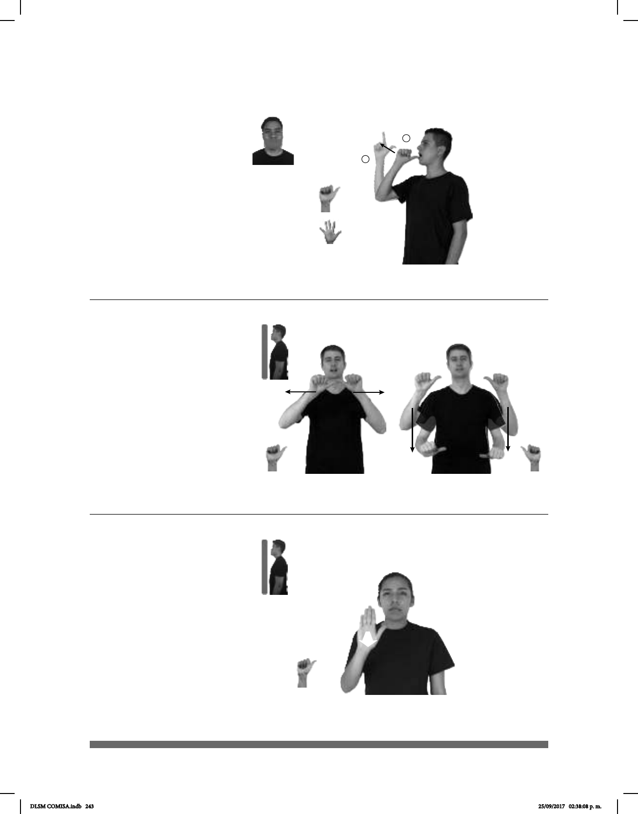

243
Altar (A-32)
1
2
(A-31)
____________________________o.i.g
pro-TÚ CREER TODOS ALMA TENER
¿Crees que todos tenemos alma?
ANTIER ALTAR DENTRO IGLESIA MORMONA pro-YO IR
Antier fui al altar de una iglesia mormona.
(A-33)
__muy
pos-MI SOBRINO ALTO
Mi sobrino es muy alto.
Seña: SM
Seña que pasa de A.1 a L.1
Palma hacia la izquierda.
Inicia sobre el labio inferior y
termina a la altura del rostro.
La mano se mueve formando
un arco hacia arriba y hacia enfrente.
Boca abierta.
sust. f. Parte inmaterial del ser
humano a la que se le atribuyen las
sentimientos, los valores morales y el
pensamiento.
Seña: I. y II. SS
I. y II. A.1
I. y II. Palmas hacia
afuera.
I. A la altura de los
hombros del centro a los lados; II. De
los hombros a la cintura.
I. y II. Recto.
Simula la forma de
un altar.
sust. m. En algunas
religiones, piedra, construcción elevada o
montículo donde se celebran ritos
etc.
La seña se usa en la
comunidad sorda mormona.
Seña: SM
A.4
La palma inicia hacia abajo
y termina hacia afuera.
De la cintura a la cabeza.
Recto.
Cabeza ligeramen-
te inclinada hacia la derecha.
Simula la altura de una
persona.
adj. Que mide mucho desde
su parte inferior a su parte superior.
DLSM COMISA.indb 243 25/09/2017 02:38:08 p. m.